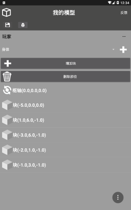
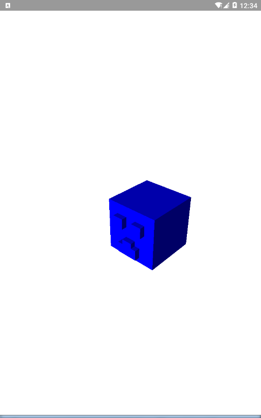
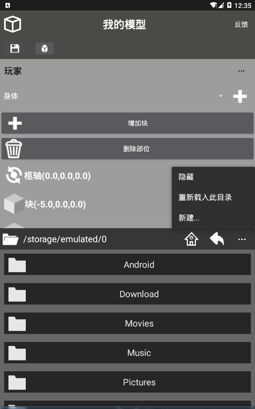
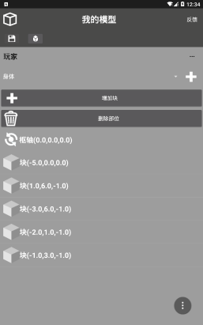
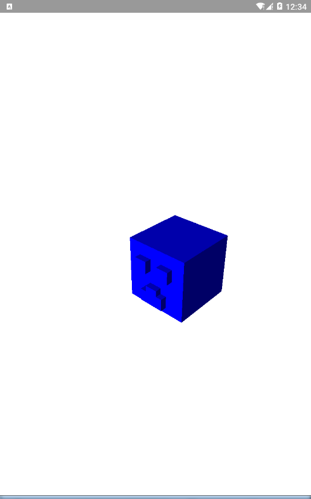
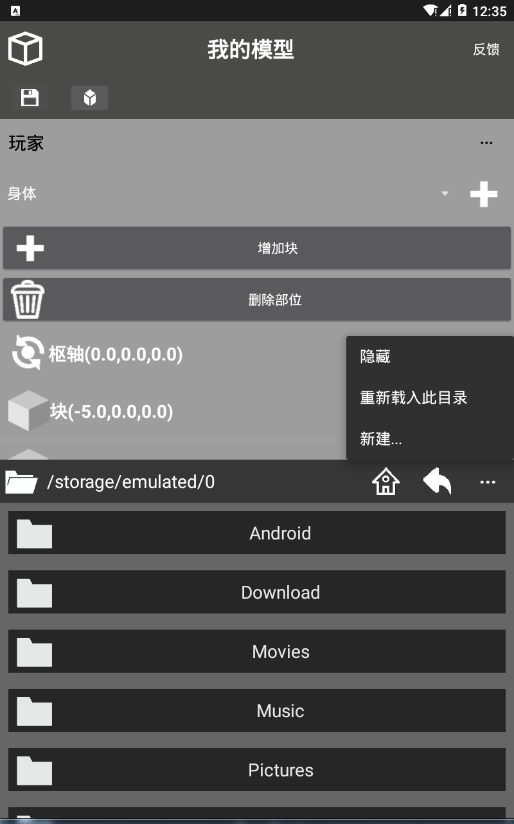

|
全新引入LibGDX！ | ||||||
|
|||||||
简介
Builder是一个为Minecraft PE和Minecraft for Windows 10定制材质模型的应用。
-实用的文件管理器，支持对文件或文件夹的复制、移动、重命名、删除以及获取文件路径的功能，为项目制作带来便利。
-将JSON模型代码转换为可视化的列表，适应初学者学习及编辑大项目。
-简洁的界面。此应用使用了黑色作为主题色，且界面布局整齐。
-快速3D预览。此应用内置了LibGDX引擎，可快速预览你的模型。
-更多功能将会增加。目前，此应用为第一个测试版本，功能较少 ，不过，在以后的更新，它会变得更完美，敬请期待。
目前，此应用还在测试，若在使用中遇到异常或漏洞，欢迎即使通过应用右上角的反馈按钮告诉我，我会在第一时间带来解决方案及修复这个漏洞，欢迎反馈。
 

| GloriousPast's space |